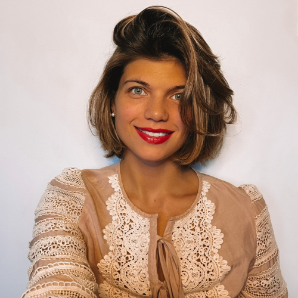
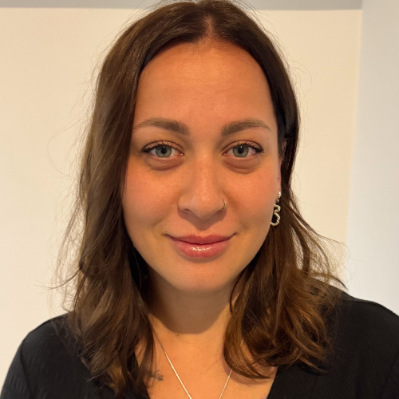
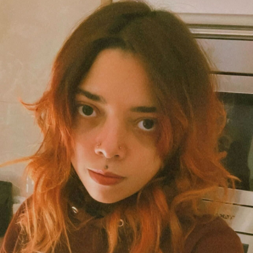

Mariia
I started learning programming because I’ve always been curious about how applications are created — from the idea and code to the final launch. I love learning new things and am currently studying both English and Spanish. In my free time, I enjoy traveling, reading, spending time by the sea, and being with my daughter.
Nadiia
I’m passionate about learning programming and always excited to explore new technologies. In my free time, I enjoy cooking, growing a variety of plants in my garden, and spending time outdoors. I love traveling and taking long walks by the sea or in the mountains—anything that brings me closer to nature and new experiences.
Nia
I'm curious about programming and interested about how I can use this knowledge to create something meaningful in my life. My hobbies include drawing, playing videogames, listening to music, and learning to play the guitar.